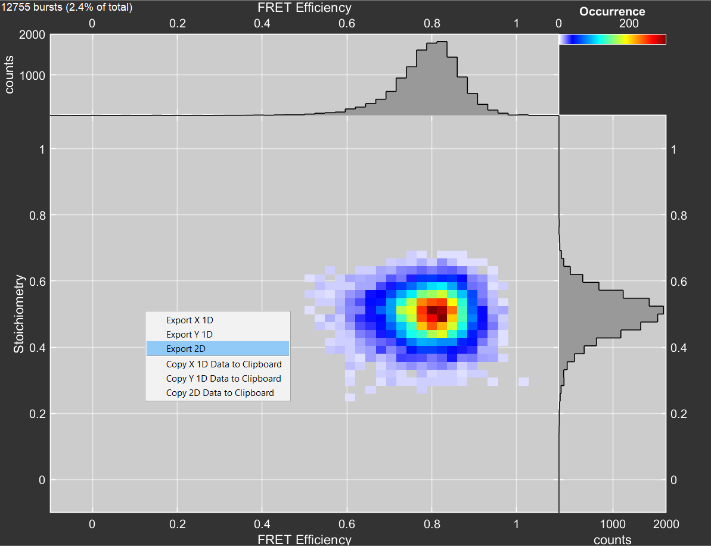

MatPAM
MatPAM provides a set of export function to extract data from PAM to .json formatted ASCII files.
Extract 2D histograms
From PAM’s BurstExplorer module draw a new Matlab figure window with a 2D histogram by right-clicking on the plot and selecting Export 2D.
{kind=link}
From the Matlab console run:
extract_2Dplot
# you may also add additional parameters to be included in the output json file
extract_2Dplot('photons_per_window', 5)
Currently implemented key-value pairs are:
photons_per_window (int)
crosstalk (float)
direct_excitation (float)
gamma_factor (float)
Export FCS fit results
From PAM’s FCSfit module right-click on the plot and select Export to workspace.

From the Matlab console run:
write_FCS(FCS)
# the average count rate can be included in the output json file.
write_FCS(FCS, average_counts)
The parameter average_counts should be a n x 1 column vector. Copy it manually from the fit table to the Matlab console.
Note
The model that you use for fitting the data in PAM must be present in the write_fcs() skript. If you get a message: -> model does not exist add your model to the fit function definitions in write_fcs() skript.
Extract timetrace
From PAM’s main window right click on the intensity time trace and select Export.
{kind=link}
From the Matlab console run:
# extract the entire trace
extract_timetrace
# extract a range by specifying start and end times (in s)
extract_timetrace('start_time', 0.001, 'end_time', 1)